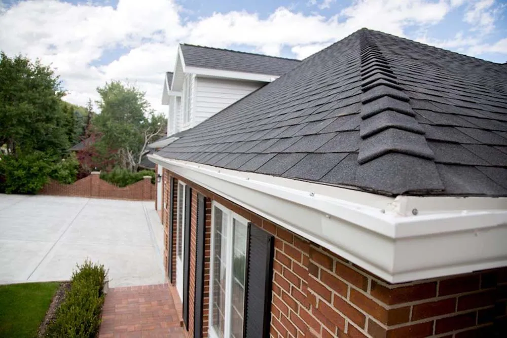

Contact
Contact M&M Gutters & Exteriors
M&M Gutters & Exteriors
Contact UsTo contact us, fill out the form below or call (801) 280-2222.
Utah Homeowners Love Us
Our commitment to quality and customer satisfaction has earned us the trust of homeowners throughout Salt Lake City. But don’t just take our word for it — see what our clients have to say.
M&M Gutters & Exteriors 399 Google reviews Write a review Posted on Google Taylor Deus Trustindex verifies that the original source of the review is Google. M&M Gutters was amazing! Pricing was competitive, detailed installation& reliable quality. Nick spent an extra 30 minutes addressing my concerns and bringing forth resolution. I would definitely call Nick and the M&M Team again for any gutter needs. Posted on Google Scott Trustindex verifies that the original source of the review is Google. Nick quickly determined our gutter issue and had it all fixed in about 45 minutes! I couldn’t be happier with the high quality work done and his professionalism. There are so many gutter companies out there, but save yourself some time and just call M&M - you’ll be so glad you did! Posted on Google Greta Ray Trustindex verifies that the original source of the review is Google. Nick did a great job explaining the details of the installation of new rain gutters & downspouts. His crew came and installed everything in a day and everything’s looks wonderful. Thank you, Greta Ray Posted on Google David Wahlstrom Trustindex verifies that the original source of the review is Google. I needed some assistance in anchoring a section of gutter that had come loose during the last hailstorm(9/2025). M&M responded immediately with a courteous, respectful and friendly Tech. David fixed the problem right away and offered preventative advice to eliminate the problem in the future. Five Star + for M&M Gutters & Exteriors!☺️ Posted on Google Karen Woolston Trustindex verifies that the original source of the review is Google. So good to work with. Edwardo is great work installing gutters and cleaning up. I would use M&M Gutters again Posted on Google John H. Mullen III Trustindex verifies that the original source of the review is Google. James listened to my concerns, analyze the two situations and came up with solutions. One of the solutions is temporary, but it allowed me to fix a problem that I was unaware of. Posted on Google Kathryn C Trustindex verifies that the original source of the review is Google. We chose M&M for new gutters based on them having other really good online reviews and also our realtor who said they had a very good reputation. From the first phone call everything was super smooth and super easy to coordinate. They showed up quick and on time did a great job and made sure I was fully satisfied with the gutters. Nick was absolutely amazing and very personable and clearly a hard worker. I will definitely use M&M again in the future for exterior house needs. Thanks Nick!!!! Posted on Google Rusty Carson Trustindex verifies that the original source of the review is Google. Mack is great Reattached down spouts and helped me with a gutter issue . Fast and efficient. M&M came next Posted on Google Krista Woods Trustindex verifies that the original source of the review is Google. had new concrete poured and realized my gutters needed to be shortened. M&M Gutters came out quickly, assessed the situation, and instead of trying to sell me brand-new gutters, they suggested simply trimming the existing ones with clippers. It was a simple solution that saved me a ton of money, and it worked perfectly! I really appreciated the honesty, professionalism, and efficiency. Highly recommend M&M Gutters for anyone looking for quality work and trustworthy service! Posted on Google cb thomas Trustindex verifies that the original source of the review is Google. Mack and M&M Gutters did an amazing job on our siding! We had tired, cracked, and deteriorated board and baton siding. Mack came and offered several options with detailed estimates. Once we made the decision, he communicated clearly throughout the project and the crew did an amazing job on the installation. Sergio, who did the detailed wrap on our wall of windows, was exceptional! It’s like we have a new home!